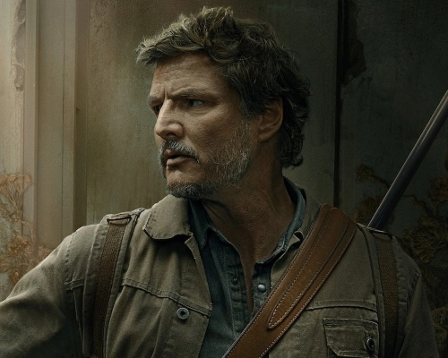

Joel Miller

Joel Miller (TV) is the protagonist in The Last of Us.
He is a middle-aged survivor who is troubled by his past in the start of the apocalypse.
Reasons why Joel Miller is my king:
- He is seriously badass. For a middle-aged man with deafness in one ear and aching joints dude is absolutely spectacular.
- He is an amazing father figure, especially considering they're in an apocalypse and Ellie is not his real daughter (and Ellie is incredibly annoying).
- Despite being the protagonist, he still has flaws, which the show is fully willing to show, which gives Joel lots of depth as a character.